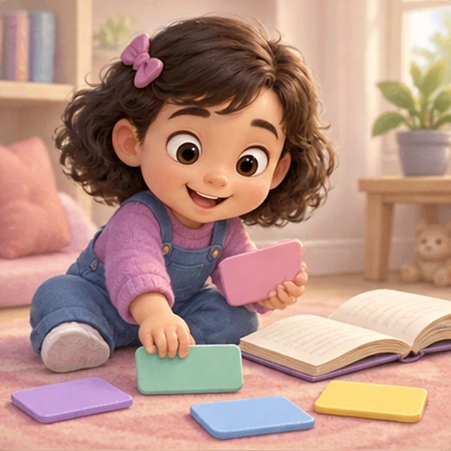

Children Games
Room
Cards
Our
Word Book
Our
Word Book
Read, spell, write and discover words
Our Dictionary
Every word, in English and Thai
Spelling
Letters and words, grade by grade
Writing Book
Trace words and fill your sticker book
Spelling Exam
See the picture, build the word, then spell it
Bookshelf
Read a picture book every day

Grammar Game
Build sentences and discover how words work